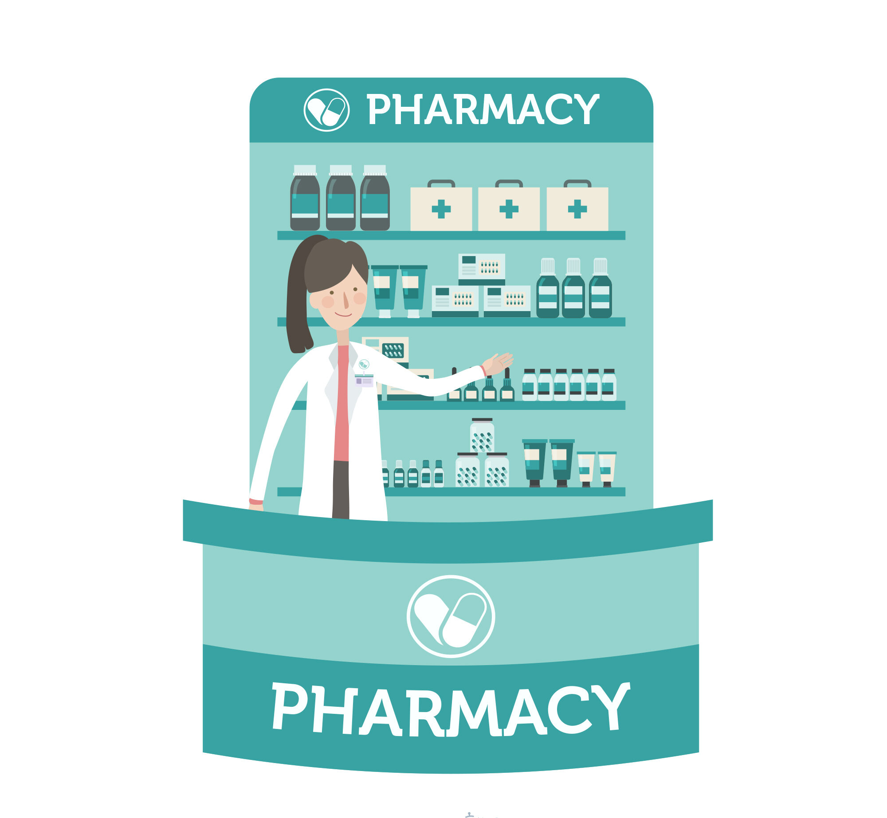

Welcome to SpeedCure Pharmacy, where caring meets expertise. We are committed to providing exceptional pharmaceutical care with a focus on compassion, transparency, and your well-being. Our knowledgeable pharmacists are here to offer personalized advice and care to our patients and ensure you receive the highest quality medications and services.
We're committed to building strong, enduring relationships with our customers, focusing on their continued happiness and success. At Al Sehat Pharmacy, we believe that everyone deserves access to essential medications, regardless of their financial situation.
We have provided free medicines to approximately 6,000 patients since the initiative's inception. We partner with local organizations and manufacturers to secure donations and discounts, making it possible for us to provide free medications to those who need them most.
PHARMACY ONLINE
24/7 SERVICE